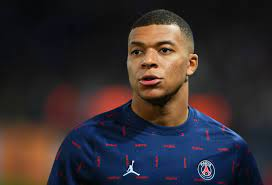
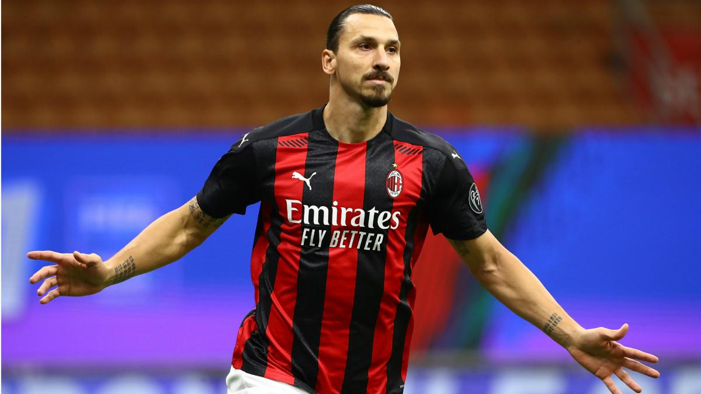

The Best of the Best
-
 Lionel Andrés Messi, also known as Leo Messi, is an Argentine professional footballer who plays as a forward for Ligue 1 club Paris Saint-Germain and captains the Argentina national team.
Lionel Andrés Messi, also known as Leo Messi, is an Argentine professional footballer who plays as a forward for Ligue 1 club Paris Saint-Germain and captains the Argentina national team. -
 Cristiano Ronaldo dos Santos Aveiro GOIH ComM is a Portuguese professional footballer who plays as a forward for Premier League club Manchester United and captains the Portugal national team.
Cristiano Ronaldo dos Santos Aveiro GOIH ComM is a Portuguese professional footballer who plays as a forward for Premier League club Manchester United and captains the Portugal national team. - Kylian Mbappé Lottin is a French professional footballer who plays as a forward for Ligue 1 club Paris Saint-Germain and the France national team
- latan Ibrahimović is a Swedish professional footballer who plays as a striker for Serie A club AC Milan and the Sweden national team.